Gỗ tự nhiên
Đặc điểm, ưu nhược điểm, cấu trúc và tính chất vật lý của gỗ
- Gỗ là nguyên vật liệu được con người sử dụng lâu đời và rộng rãi nhất
- Là một trong những vật tư chủ yếu của nền kinh tế quốc dân
- Sử dụng rộng rãi: công nghiệp, nông nghiệp, giao thông vận tải, kiến trúc, xây dựng, khai khoáng
- Ứng dụng đa dạng: văn phòng phẩm, nhạc cụ, dụng cụ thể thao, toa tàu, thuyền, phà, cầu cống, bàn ghế, đồ dùng gia đình, bệnh viện, thư viện…
- Nhẹ, KLTT trung bình 0,5 – 0,7 g/cm³
- Cách nhiệt, cách điện, ngăn âm tốt
- Dễ gia công: cưa, xẻ, bào, khoan, tách chẻ nhưng vẫn chịu lực tốt
- Dễ nối ghép bằng đinh, mộng, chất kết dính
- Vân thớ đẹp, dễ nhuộm màu, dễ trang sức
- Dễ phân ly bằng hoá chất (sản xuất giấy & ván nhân tạo)
- Nguyên liệu tự nhiên, có thể tái tạo
- Dễ xử lý cạnh, làm profile
- Sinh trưởng chậm, đường kính có hạn, nhiều khuyết tật tự nhiên
- Dễ mục, dễ bị mối, mọt phá hoại
- Dễ nứt nẻ, cong vênh, biến hình khi phơi sấy
- Tỷ lệ co dãn cao, chịu tác động lớn của độ ẩm & nhiệt độ
- Dễ biến màu, dễ cháy
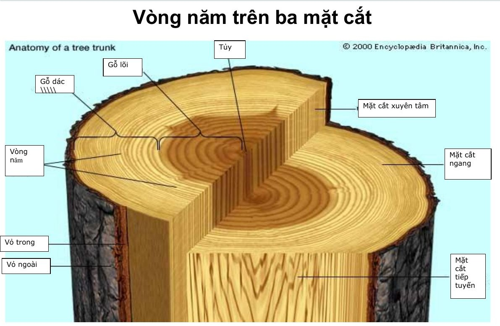
Mặt cắt ngang
Phương vuông góc với trục dọc thân cây. Nhìn thấy rõ vòng năm sinh trưởng.
Mặt cắt xuyên tâm
Phương song song với trục dọc và đi qua tâm (lõi) thân cây.
Mặt cắt tiếp tuyến
Phương song song với trục dọc và vuông góc với đường thẳng xuyên tâm.
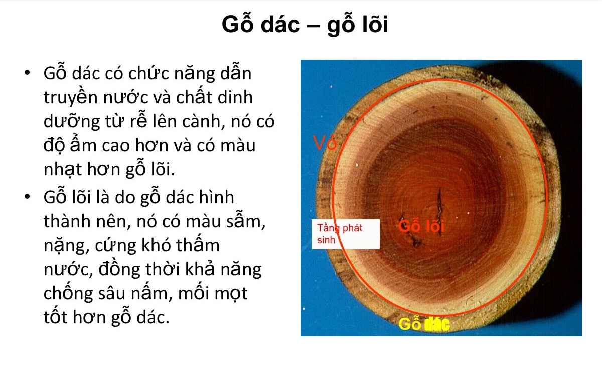
- Dẫn truyền nước & chất dinh dưỡng từ rễ lên cành
- Độ ẩm cao hơn gỗ lõi
- Màu nhạt hơn gỗ lõi
- Khả năng chống sâu nấm thấp hơn
- Hình thành từ gỗ dác theo thời gian
- Màu sẫm, nặng, cứng
- Khó thấm nước
- Chống sâu nấm, mối mọt tốt hơn gỗ dác
- Sinh trong điều kiện thuận lợi (nhiều mưa, nước dồi dào)
- Màu sáng hơn
- Tế bào vách mỏng, ruột lớn → dẫn nhiều nước
- Khả năng chịu lực cơ học thấp hơn
- Sinh trong điều kiện không thuận lợi
- Màu thẫm hơn
- Tế bào vách dày, ruột nhỏ
- Khả năng chịu tác động cơ học tốt
- Tính chất cơ lý thay đổi trong và giữa các loài
- Ứng suất sinh trưởng
- Hình dạng của cây
- Đặc tính sinh cành
- Phản ứng của gỗ (với gió, đất dốc)
- Mạch nhựa Kino (tổn thương do khai thác, côn trùng, lửa)
- Quản lý rừng trồng (lập địa, mật độ, tỉa cành)
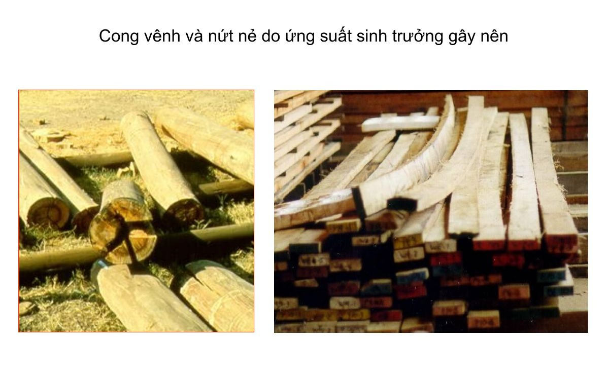
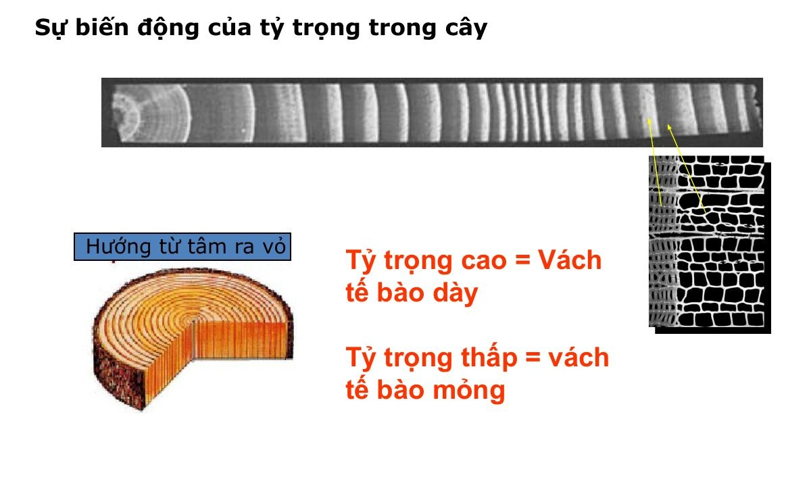
- Vách tế bào dày
- Khoảng trống trong tế bào ít
- Cường độ cơ học cao hơn
- Vách tế bào mỏng
- Khoảng trống trong tế bào nhiều
- Nhẹ hơn nhưng cường độ thấp hơn
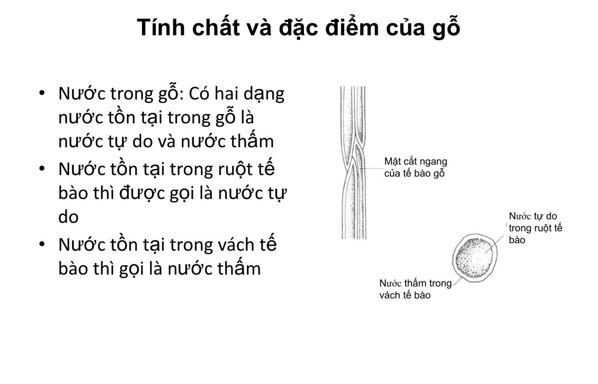
- Tồn tại trong ruột tế bào
- Thoát ra trước khi sấy khô
- Ít ảnh hưởng đến tính chất cơ học
- Tồn tại trong vách tế bào
- Ảnh hưởng trực tiếp đến tính chất cơ học
- Gây co giãn, cong vênh khi thay đổi
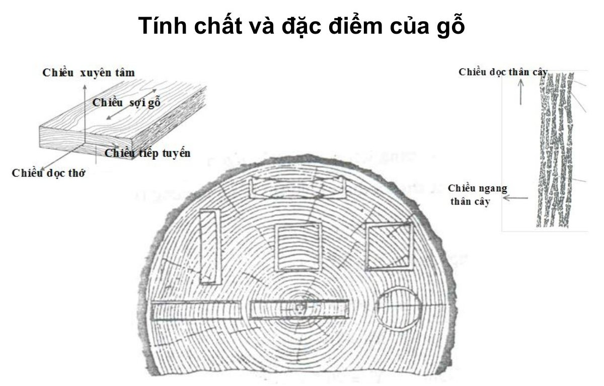
m0 = khối lượng gỗ khô kiệt (g)
m0 = khối lượng gỗ khô kiệt (g)
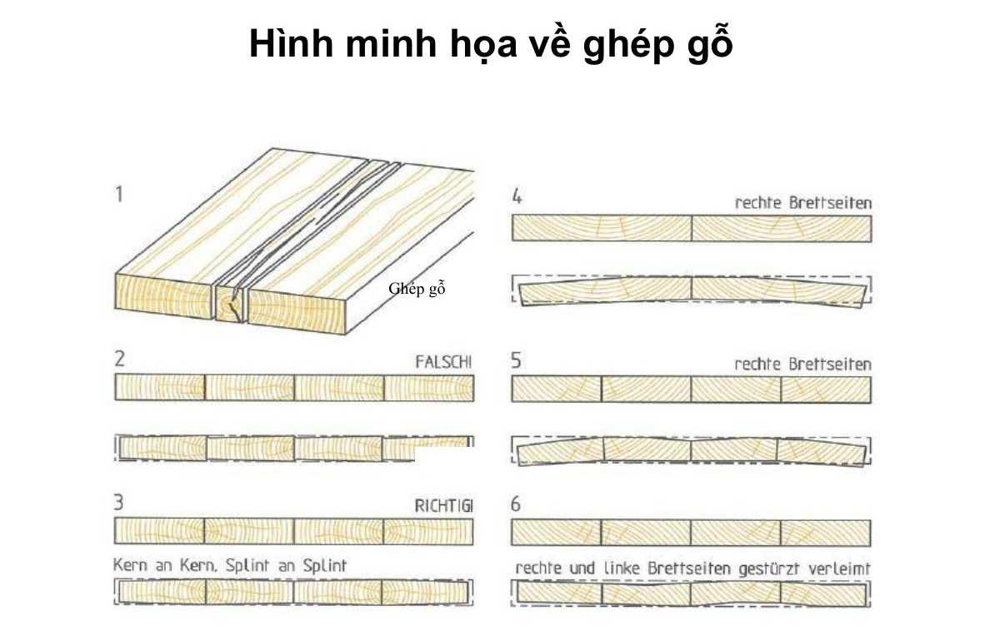
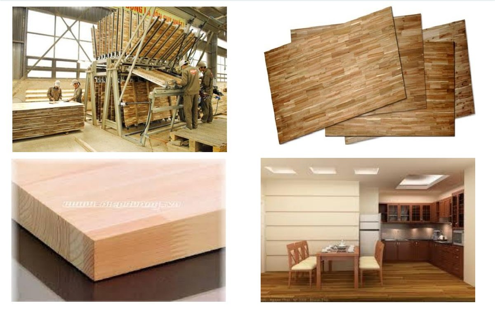
Ván nhân tạo
Ván dăm · Ván sợi MDF · Ván dán — đặc điểm, ưu nhược điểm & ứng dụng
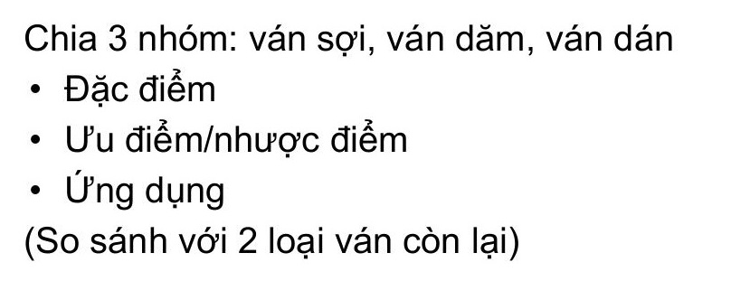
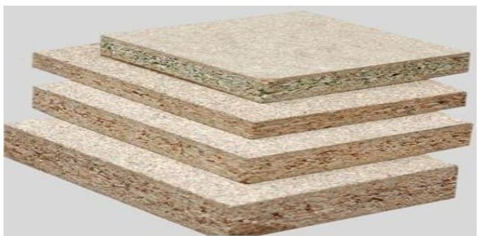
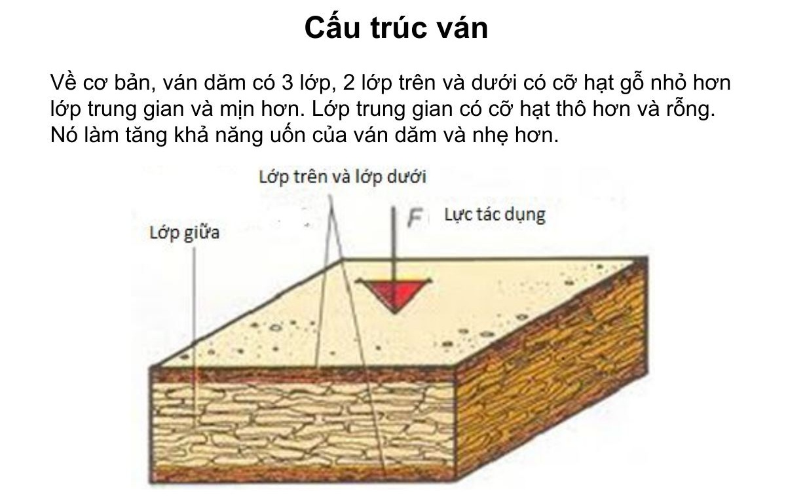
- Giá thành rẻ
- Đa dạng kích thước (2440x1220, 2440x1830mm; dày 9–25mm)
- Có thể sơn/phủ trang trí trực tiếp
- Chống sâu mọt
- Cường độ tương đối lớn
- Cách âm, cách nhiệt tốt
- Bám đinh, vít tốt hơn MDF 1,5–2×
- Khả năng dán cạnh yếu
- Khó gia công tạo hình
- Dễ hút ẩm và trương nở lớn
- Chứa formaldehyde tự do → ảnh hưởng sức khoẻ
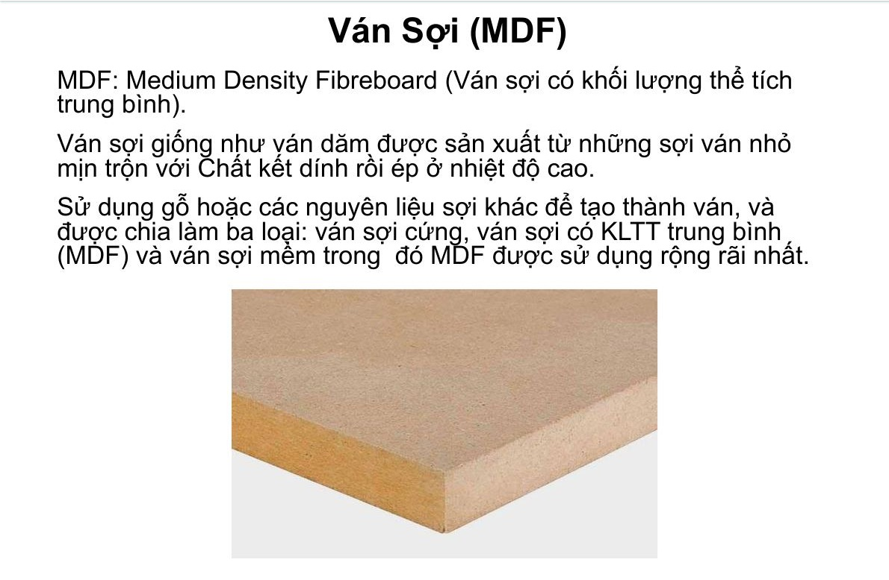
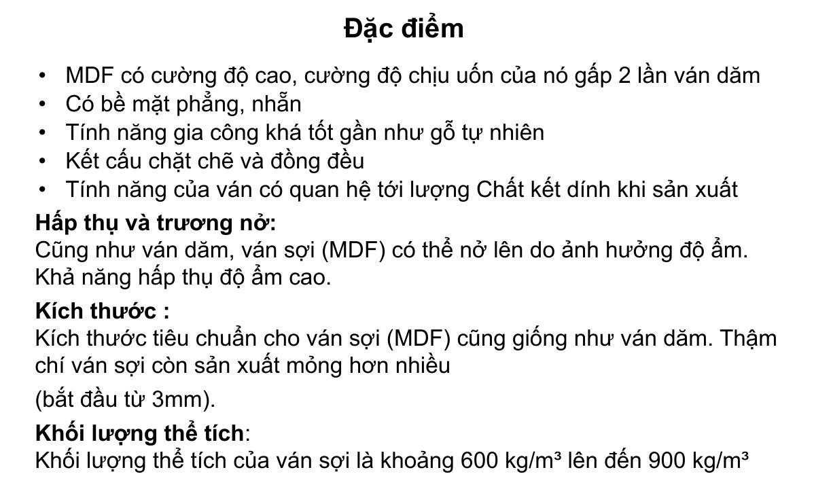
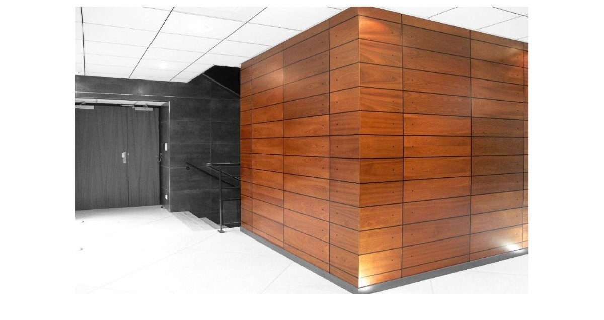
- Cường độ cao — chịu uốn gấp 2× ván dăm
- Bề mặt phẳng, nhẵn; kết cấu chặt chẽ và đồng đều
- Tính năng gia công tốt gần như gỗ tự nhiên
- Kích thước: sản xuất mỏng từ 3mm; KLTT: 600 – 900 kg/m³
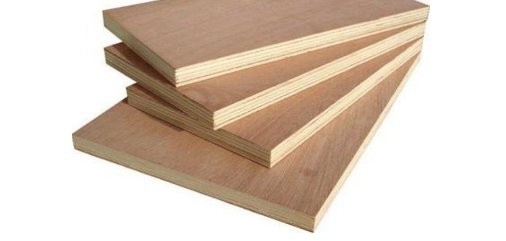
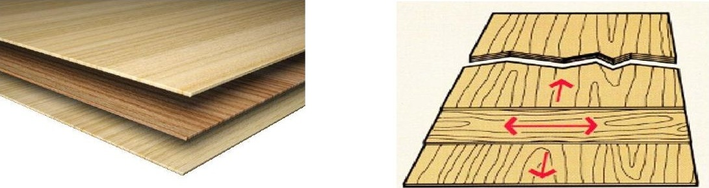
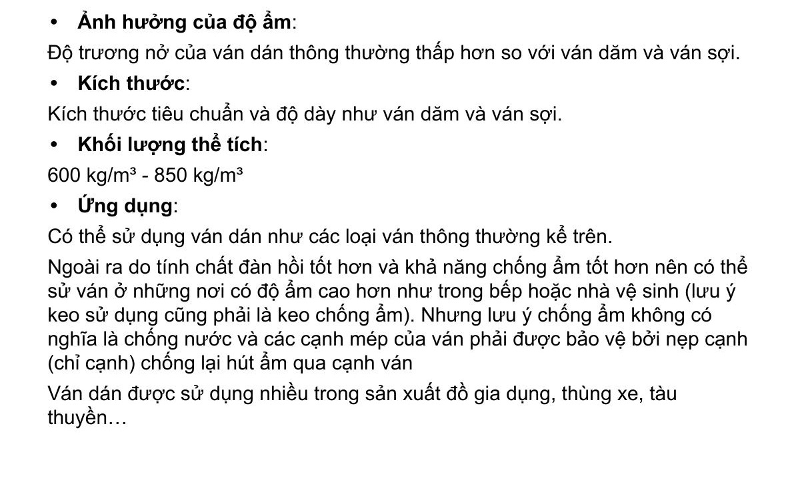
- Số lớp phải là số lẻ (≥3) để cân bằng ứng suất
- Độ trương nở thấp hơn ván dăm và MDF; KLTT: 600 – 850 kg/m³
- Chống ẩm tốt hơn → dùng được ở bếp, nhà vệ sinh (keo cũng phải chống ẩm)
- Chú ý: Chống ẩm ≠ chống nước; cạnh mép phải có nẹp bảo vệ
| Tiêu chí | Ván dăm | Ván sợi (MDF) | Ván dán |
|---|---|---|---|
| KLTT (kg/m3) | 600–700 | 600–900 | 600–850 |
| Cường độ uốn | Trung bình | Cao (2x VD) | Tốt |
| Bề mặt | Thô hơn | Phẳng, nhẵn | Tuỳ loại gỗ |
| Dán cạnh | Yếu | Trung bình | Tốt |
| Bám đinh/vít | Tốt nhất | Trung bình | Tốt |
| Chống ẩm | Kém | Kém | Tốt hơn |
| Gia công tạo hình | Khó | Tốt (nhu go TN) | Trung bình |
| Giá thành | Re nhat | Trung bình | Cao hon |
Lớp phủ
HPL · Melamine · Veneer — các loại vật liệu phủ bề mặt
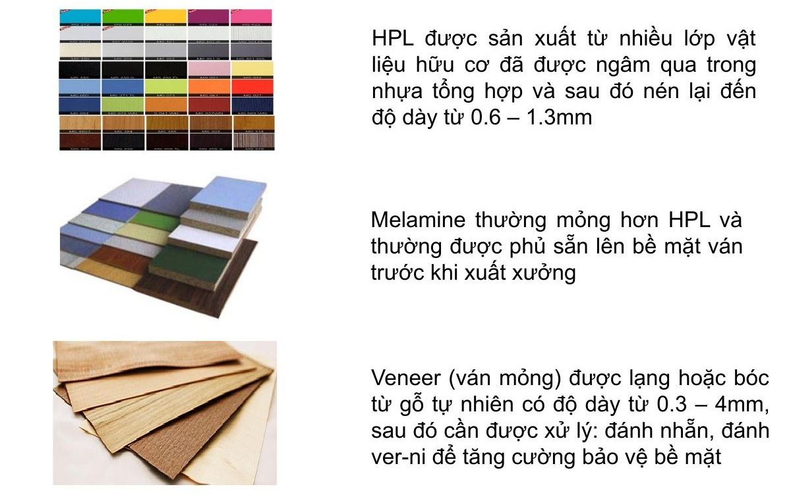
High Pressure Laminate
Nhiều lớp vật liệu hữu cơ ngâm nhựa tổng hợp rồi nén lại. Độ dày 0,6 – 1,3mm. Bề mặt cứng, bền.
Melamine Faced Board
Mỏng hơn HPL, phủ sẵn lên bề mặt ván trước khi xuất xưởng. Tiện lợi, chi phí thấp hơn HPL.
Ván mỏng tự nhiên
Lạng hoặc bóc từ gỗ tự nhiên, dày 0,3 – 4mm. Cần đánh nhẵn, ver-ni để bảo vệ. Vẻ đẹp tự nhiên.
Nẹp cạnh
Các loại nẹp bảo vệ và trang trí cạnh ván
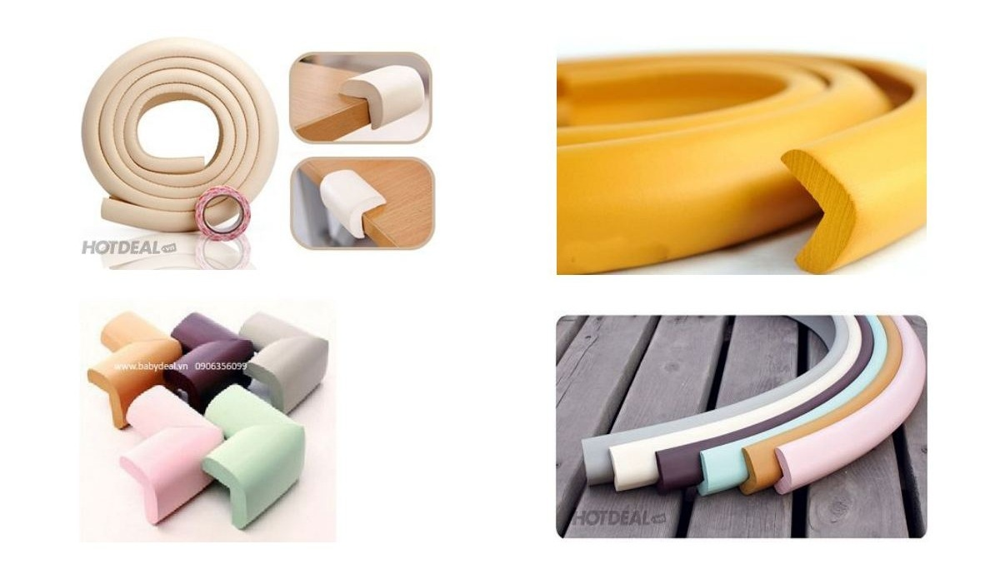
Chất kết dính
PVAc · EVA · PU · Chất kết dính liên kết · Keo 502
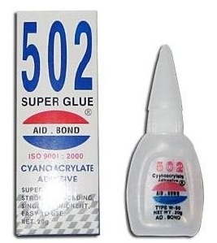
- Chỉ phù hợp đồ nội thất trong nhà
- Vật liệu phải có tính hấp thụ keo
- Dán ván lạng, lớp HPL, nối cạnh với cạnh
- Dạng rắn → lỏng khi gia nhiệt
- Liên kết hình thành khi nhiệt độ giảm
- Chủ yếu dùng cho dán cạnh bằng máy
- Dùng cho gỗ, kim loại, nhựa, vải, da
- Liên kết ổn định, chống cháy & thấm
- Dùng được trong nhà & ngoài trời
- Dán cạnh ở nơi không dùng được máy (bo góc)
- Kết nối bề mặt không hấp thụ keo (kính, kim loại)
- Không ổn định khi chịu ẩm và nhiệt
- Chỉ dùng liên kết diện tích nhỏ
- Kim loại, thủy tinh, nhựa, ceramic
| Loại keo | Môi trường | Vật liệu phù hợp | Ứng dụng chính |
|---|---|---|---|
| PVAc | Trong nhà | Gỗ, ván có độ hấp thụ | Dán ván lạng, HPL, nối cạnh |
| EVA | Trong nhà | Ván gỗ, nẹp cạnh | Dán cạnh bằng máy tự động |
| PU | Trong nhà & ngoài trời | Gỗ, kim loại, nhựa, vải, da | Liên kết đa vật liệu, chống ẩm |
| Contact | Linh hoạt | Kính, kim loại, bề mặt không hấp thụ | Dán cạnh thủ công, bo góc |
| Keo 502 | Khô ráo | Kim loại, thủy tinh, nhựa, ceramic | Diện tích nhỏ, sửa chữa nhanh |